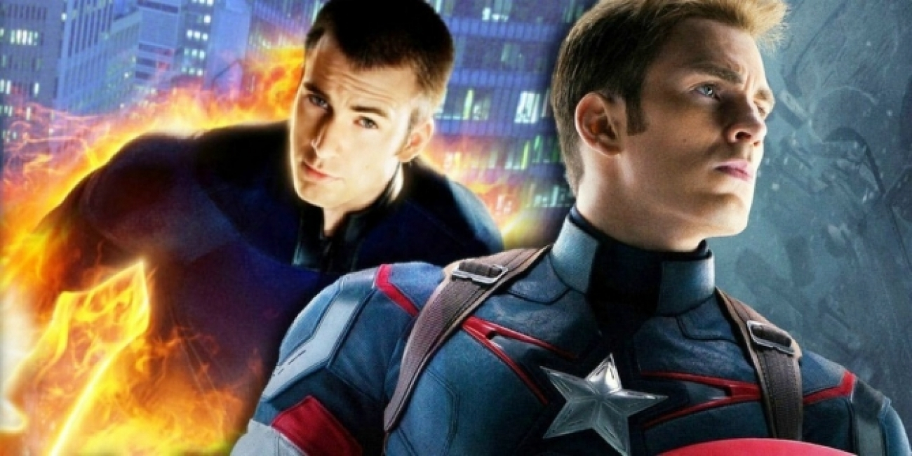

Chris Evans อาจกลับมาในหนังมาร์เวลกับบท Human Torch ไม่ใช่ Captain America

ในตอนแรกที่มีข่าวว่า Chris Evans ผู้รับบท Steve Rogers หรือ Captain America ในหนังจักรวาลมาร์เวลมาตั้งแต่ปี 2011 และ Avengers: Endgame (2019) ก็เป็นการปิดจบบทบาทของตัวละครตัวนี้อย่างงดงามไปแล้วนั้น จะกลับสู่หนังของจักรวาลนี้อีกครั้ง แฟน ๆ อาจถูกหลอกว่า เขาจะกลับมารับบทเดิม แต่ลืมไปหรือเปล่าว่า Evans นั้นก็เคยรับบทเป็นซูเปอร์ฮีโร่ของมาร์เวลอีกตัวหนึ่งมาก่อนหน้าปี 2011 นั่นก็คือ Human Torch หรือมนุษย์เพลิงในกลุ่มสี่กายสิทธิ์ หรือ Fantastic 4 มาก่อน
Evans นั้นนับเป็นนักแสดงคนแรกที่ได้รับบทซูเปอร์ฮีโร่ของมาร์เวลถึง 2 บทบาท (หลังจากนั้นก็มีอีก 2-3 คน แต่ไม่ใช่บทนำของเรื่องเท่านี้) และหลังจากมาร์เวลจะเล่นเรื่องของ Multiverse ในหนังอีก 2-3 เรื่องนับจากซีรีส์ WandaVision ที่กรุยทางไว้แล้ว ก็ไม่แปลกที่แฟน ๆ จะเริ่มคิดต่อยอดว่า Evans คงไม่ได้กลับมารับบทเดิมที่ปิดจบอย่างสวยงามไปแล้ว แต่จะว้าวมากกว่าถ้าเขากลับมาในบทมนุษย์เพลิง
เว็บไซต์ Giant Freaking Robot รายงานข่าวลือว่า Evans มาทั้งทีจะมารับบทเป็นสองตัวละครเลยใน Doctor Strange in the Multiverse of Madness คือ Captain Hydra ซึ่งเป็นด้านมืดของ Captain America และบทมนุษย์เพลิง Human Torch ด้วย ซึ่งจากข่าวนี้คงต้องบอกว่าเป็นข่าวลือในขั้นต้นมาก ๆ รวมถึงอาจเป็นการทำให้มาร์เวลได้ไอเดียไปต่อยอดในการเพิ่มตัวละครเข้าไปในหนังอีก (ซึ่งตอนนี้ทุกเรื่องก็มีฮีโร่ไปรวมกันต่อเรื่องเยอะอยู่แล้ว) หนัง Doctor Strange 2 จะเป็นงานกำกับของ Sam Raimi จาก Spider-Man ไตรภาคแรกสุด (2002-2007) และมี Wanda หรือ Scarlet Witch ไปรับบทนำด้วย